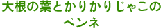
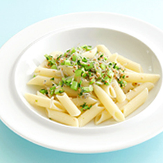
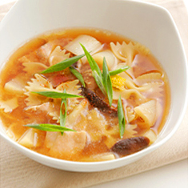
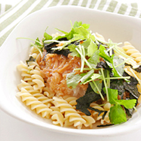
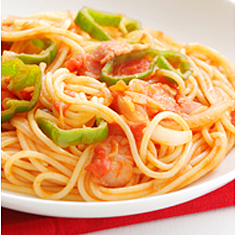
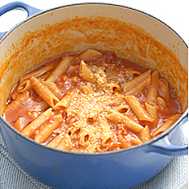
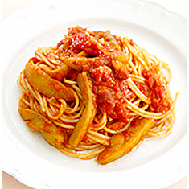

HOME ＞ 2014年敬老の日特集
パスタと聞くと、敷居が高そう、脂っこいものは…と懸念されるシニア世代が多いかもしれませんが、パスタは意外とヘルシーなんです！ 普段パスタを召し上がらないシニア世代にこそ作ってあげたいパスタレシピをご紹介します。




普段お孫さんと料理を作る機会はございますか？大抵の方はなかなかないかと思います。 そこで、この機会にお孫さんとパスタを作ってみることをおススメいたします♪ お孫さんとの仲もぐっと近づくこと間違いなしです！


